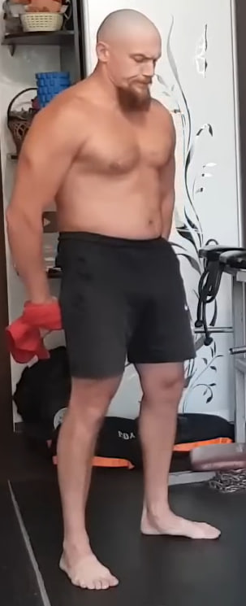
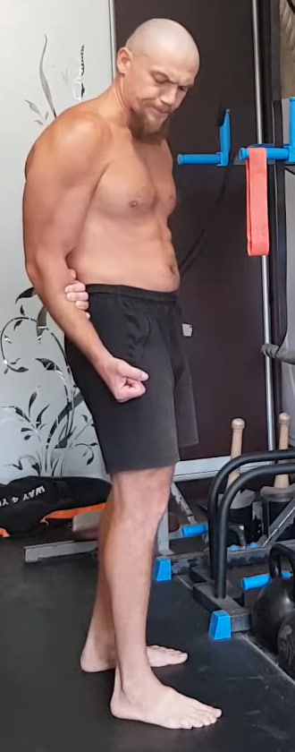
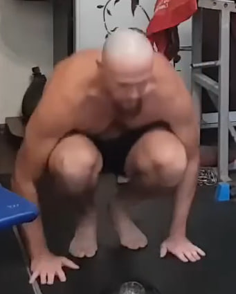

Día 3: isometría y control + agarre y antebrazos (sin equipo)
Hoy trabajamos isometría y control, agarre y antebrazos, piernas y glúteos con ejercicios simples que caben en una habitación. El objetivo es construir fuerza útil, resistencia y control corporal con el mínimo de equipo.
Prioriza la técnica, respira con control y acumula consistencia: incluso una sesión corta suma cuando la repites día tras día.
1. Rotura en tres puntos con toalla
Antes de empezar: haz el calentamiento y repasa la respiración. (No lo saltes.)
Protocolo isométrico: tensión 10 s + descanso 5 s × 10 repeticiones (por lado, si aplica). Respira 3‑3‑3 durante la tensión (inhalar 3 s, retener 3 s, exhalar 3 s) y usa 3‑6‑3 entre series para recuperar. Más detalles: Respiración.



Utiliza una toalla, cinturón de kimono o cinta que no se estire . Trabajarás en tres posiciones: con los brazos al frente a la altura del pecho, por encima de la cabeza y abajo frente a los muslos. En cada posición intenta “romper” la toalla tirando con la máxima fuerza hacia los lados. Pasa enseguida a la siguiente posición. Las tres posiciones consecutivas cuentan como un ciclo. Enrolla el material en las muñecas dejando unos 46 cm de distancia entre las manos. Completa 10 ciclos, cambiando ligeramente la altura y el ángulo para explorar nuevos puntos de tensión.
2. Bíceps isométrico con el brazo a 90 grados
Antes de empezar: haz el calentamiento y repasa la respiración. (No lo saltes.)
Protocolo isométrico: tensión 10 s + descanso 5 s × 10 repeticiones (por lado, si aplica). Respira 3‑3‑3 durante la tensión (inhalar 3 s, retener 3 s, exhalar 3 s) y usa 3‑6‑3 entre series para recuperar. Más detalles: Respiración.

Con la otra mano sujeta con fuerza la muñeca o el puño y empuja hacia abajo, creando resistencia. El brazo de trabajo intenta seguir flexionándose, pero la mano de apoyo bloquea el movimiento, generando una contracción profunda del bíceps. Flexiona el brazo de trabajo formando un ángulo cercano a 90 grados frente al cuerpo. Mantén la contracción durante unos segundos y repite hasta completar 10 repeticiones por lado.
3. Isometría para el deltoides anterior con agarre detrás de la espalda
Antes de empezar: haz el calentamiento y repasa la respiración. (No lo saltes.)
Protocolo isométrico: tensión 10 s + descanso 5 s × 10 repeticiones (por lado, si aplica). Respira 3‑3‑3 durante la tensión (inhalar 3 s, retener 3 s, exhalar 3 s) y usa 3‑6‑3 entre series para recuperar. Más detalles: Respiración.

Coloca los brazos detrás de la espalda y engánchalos entre sí. Con la mano de apoyo sujeta firmemente el antebrazo del brazo de trabajo. El brazo de trabajo intenta elevarse hacia arriba detrás del cuerpo, mientras la mano de apoyo bloquea el movimiento y no le permite subir. Realiza 10 ciclos por lado.
4. Isometría “abrazo del codo” para la escápula
Antes de empezar: haz el calentamiento y repasa la respiración. (No lo saltes.)
Protocolo isométrico: tensión 10 s + descanso 5 s × 10 repeticiones (por lado, si aplica). Respira 3‑3‑3 durante la tensión (inhalar 3 s, retener 3 s, exhalar 3 s) y usa 3‑6‑3 entre series para recuperar. Más detalles: Respiración.

Cruza el brazo de trabajo frente al cuerpo y abrázalo por el codo o el antebrazo con la otra mano. El brazo de trabajo intenta llevar el codo hacia atrás y hacia afuera mientras la mano que abraza no le deja moverse. Se crea una isometría intensa en la escápula, el deltoide posterior y la parte alta de la espalda. Mantén la tensión unos segundos y repite hasta completar 10 repeticiones por lado.
5. Burpee sin flexión
Antes de empezar: haz el calentamiento y repasa la respiración. (No lo saltes.)


Desde la posición de plancha, salta llevando los pies hacia adelante y luego realiza un salto vertical con los brazos abajo. No hay flexión de brazos. Completa 10 repeticiones manteniendo un ritmo fluido y el cuerpo compacto.
6. Saltos estrella desde sentadilla
Antes de empezar: haz el calentamiento y repasa la respiración. (No lo saltes.)
Seguridad en sentadillas: mantén los talones apoyados y el peso en el medio del pie. Las rodillas deben seguir la dirección de los dedos (sin colapsar hacia adentro). Si eres principiante o sientes molestias, evita que las rodillas se adelanten demasiado y piensa en “caderas atrás” para proteger la articulación.


Comienza en sentadilla completa con las manos cerca del suelo. Desde ahí, explota hacia arriba abriendo brazos y piernas en forma de estrella. Aterriza suave, vuelve a la sentadilla y repite 10 veces sin pausas.
7. Fondos con piernas elevadas en superficie paralela
Antes de empezar: haz el calentamiento y repasa la respiración. (No lo saltes.)

Colócate entre dos taburetes, barras paralelas o cualquier soporte firme que permita apoyar las manos a los lados del cuerpo. Extiende las piernas al frente y rectas, manteniendo el cuerpo en una línea rígida. Desde esta posición baja el cuerpo flexionando los codos hacia atrás, sin dejar que los hombros colapsen, y luego empuja hacia arriba hasta volver a la posición inicial sin bloquear los codos. El movimiento es corto, controlado y muy tenso, con una fuerte activación del tríceps, deltoides y pecho inferior. Realiza 10 repeticiones, manteniendo las piernas elevadas durante todo el ejercicio.
8. Fondos en banco para tríceps con pausa isométrica
Antes de empezar: haz el calentamiento y repasa la respiración. (No lo saltes.)
Protocolo isométrico: tensión 10 s + descanso 5 s × 10 repeticiones (por lado, si aplica). Respira 3‑3‑3 durante la tensión (inhalar 3 s, retener 3 s, exhalar 3 s) y usa 3‑6‑3 entre series para recuperar. Más detalles: Respiración.


Siéntate frente a un banco y apoya las manos en el borde con los dedos mirando hacia adelante. Extiende las piernas al frente y eleva la cadera para quedar en suspensión. Desciende flexionando los codos hacia atrás y luego sube casi por completo, sin bloquearlos. Realiza 10 repeticiones, manteniendo siempre una contracción fuerte del tríceps.
9. Peso muerto isométrico “bloqueado” con agarre de una pierna
Antes de empezar: haz el calentamiento y repasa la respiración. (No lo saltes.)
Protocolo isométrico: tensión 10 s + descanso 5 s × 10 repeticiones (por lado, si aplica). Respira 3‑3‑3 durante la tensión (inhalar 3 s, retener 3 s, exhalar 3 s) y usa 3‑6‑3 entre series para recuperar. Más detalles: Respiración.

Inclina el torso hacia adelante como en un peso muerto, manteniendo la espalda firme y el abdomen activado. Con ambas manos agarra la pierna por debajo de la rodilla, creando un punto de anclaje. Desde esta posición intenta levantar el torso como si iniciaras un peso muerto, pero la pierna agarrada bloquea el movimiento, generando una tensión isométrica muy fuerte en la zona lumbar, glúteos y abdomen. Realiza 10 ciclos por cada lado.
Cierre
Experimenta: ajusta ángulos, rango y puntos de tensión hasta encontrar la versión que te sienta bien. Lo importante es que el entrenamiento sea sostenible y te dé ganas de volver. Crea condiciones para entrenar con regularidad, aunque sea poco: 10 minutos cuentan. Esta rutina está pensada para eso: que puedas cumplir incluso con poco espacio, poco tiempo y circunstancias difíciles.